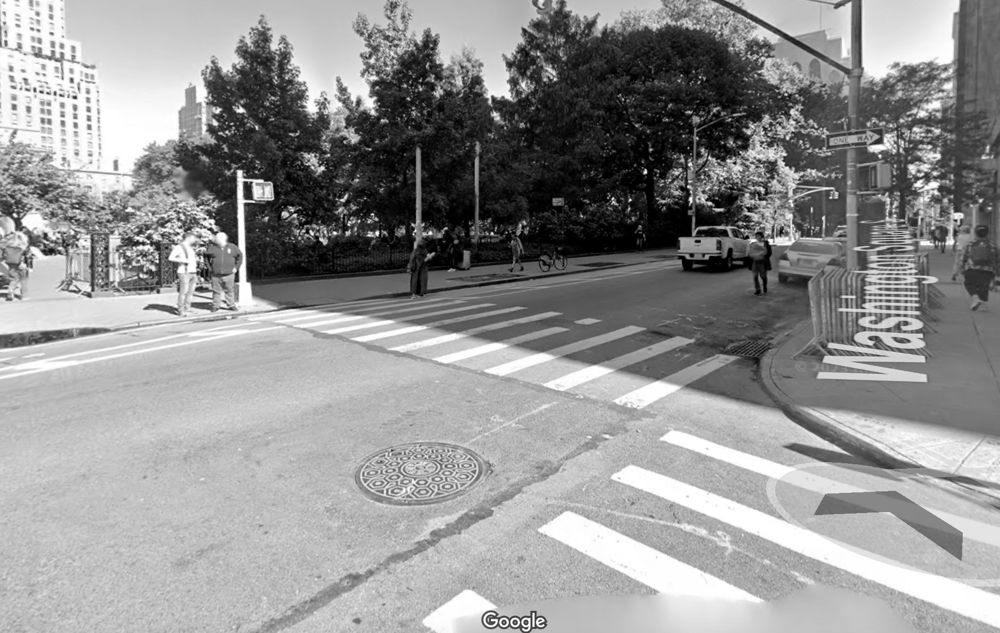
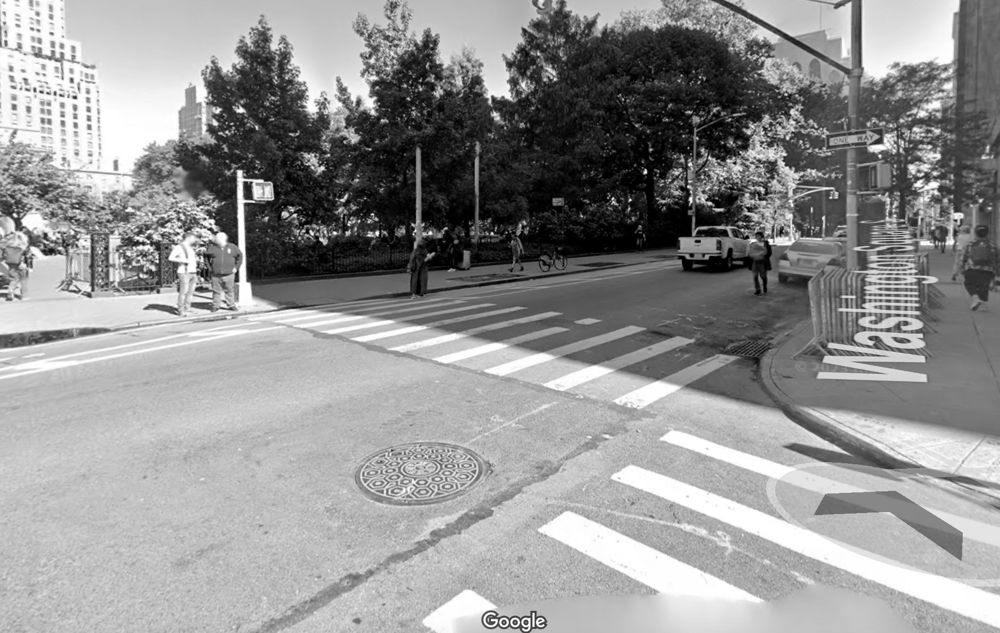

homepage
 

Location: The corner of Washington Square S and Thompson st
Coordinates:40.73015° N, 73.99806° W
I think its important to stand up for those who can't stand up for themselves. Especially with everything going on in our world today, people's voices are consistently being silenced. Speaking up for yourself may seem simple but in many situations its actually really scary. Growing up as a woman, I've been in situations where I wish I had someone to speak for me when I couldn't. To protect me when I didn't have the ability to protect myself. and because of that I always try to be that person for people, especially my loved ones. I have made it a personal mission to always be the protector I needed. To use my voice when those around me can't.